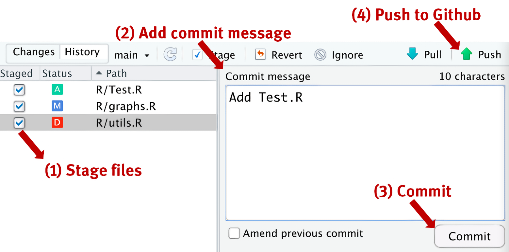
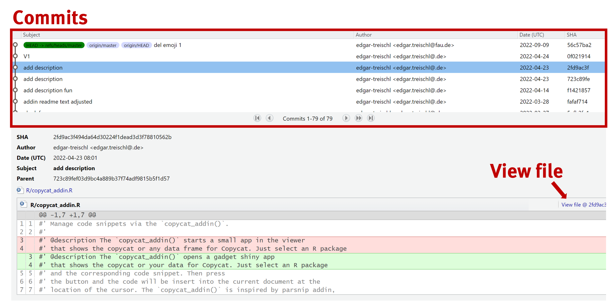

# Link to GitHub repository
link <- paste0("https://raw.githubusercontent.com/",
"edgar-treischl/edgar/refs/heads/",
"master/inst/graphs/pacman.R")
# Source the code, show the plot from the source file
devtools::source_url(link)
showplot()7 Git(Hub): A Gentle Introduction for R Users
7.1 Introduction
Git is a powerful version control system to track changes in code over time. It’s an essential tool for sharing work, collaborating with others, and automating repetitive tasks. GitHub (and GitLab) are platforms built around Git that allow developers to host, share, and collaborate on projects. At its core, GitHub serves as a repository for Git-based projects.
Learning Git can be intimidating, especially for beginners. However, R users have a head start because R packages and RStudio make it easy to work with Git and GitHub. For example, R packages like usethis and devtools provide functions to set up Git, create repositories, and share code. RStudio, on the other hand, offers a Git pane that simplifies common Git operations, such as staging, committing, and pushing changes. If you work with Code on a daily basis there is no doubt, you should consider learning Git.
For example: Suppose you’ve shared your code on GitHub. While others can download the code, they can also run it directly in their R console. This makes the source_url() function from the devtools package possible, which allows you to execute R code directly from a URL. The next time you update your code, your colleagues can rerun the code to get access the latest version. As the next code chunk demonstrates, pacman.R live in my GitHub account and creates a plot when sourced.
Git is an essential tool for any data scientist, and GitHub is a game-changer in many ways. This article introduces Git and GitHub to R users, focusing on how R packages and RStudio make it particularly easy to work with these tools. If you’re not an R user, don’t worry! The concepts and tools introduced here are applicable to any programming language.
The article is structured as follows: First, we inspect how to set up and use Git and GitHub in RStudio. Then, I’ll cover the most important Git basic with a focus on troubleshooting. Finally, I’ll introduce (GitHub) Gist, a simple way to share code snippets.
7.2 Getting Started
To get started with Git and GitHub, there are three key steps: First, install Git on your local machine. Second, create a GitHub account. Finally, connect RStudio with GitHub.
7.2.1 Install Git
Below are the installation instructions for different operating systems:
- Windows: https://git-scm.com/download/win
- OS X: https://git-scm.com/download/mac
- Debian/Ubuntu: sudo apt-get install git-core
After installing Git, you can check if the installation was successful by typing git --version into the console. It should return the installed version if everything went well.
# Go to the console and type:
git --versiongit version 2.39.5 (Apple Git-154)Next, you need to introduce yourself to Git. Git needs to know your identity to track changes properly and attribute them to you. You can do this by setting your username and email address with the git config command. You can configure this directly in the console or use the usethis package, which offers additional functionality for setting up your Git environment. We’ll revisit the usethis package shortly.
# Set your user name and email address via bash
git config --global user.name "User Name"
git config --global user.email "email@adress.com"# Set your user name and email address via R
library(usethis)
use_git_config(user.name = "Jane Doe",
user.email = "jane@example.org")To check if the configuration was successful, type git config –global –list in your console.
git config --global --listfilter.lfs.clean=git-lfs clean -- %f
filter.lfs.smudge=git-lfs smudge -- %f
filter.lfs.process=git-lfs filter-process
filter.lfs.required=true
user.name=Edgar Treischl
user.email=77931249+edgar-treischl@users.noreply.github.com
core.excludesfile=~/.gitignoreBefore we continue, let’s familiarize ourselves with some key Git/GitHub terminology. Git can seem a bit overwhelming at first, especially because of its technical jargon. But don’t worry—at this stage, we only need a basic understanding of the most important terms:
- Repository: A folder that contains all the project files.
- Push: Uploading code (files) to a Git repository.
- Pull: Downloading code (files) from a Git repository.
- Commit: A snapshot of a repository at a specific point in time.
- Branch: A separate version of the repository used to test new features.
- Merge: Combining changes from two branches into one.
- Merge conflicts: Occur when two branches modify the same part of a file, and Git cannot automatically determine which version is correct.
- Fork: A copy of another repository, typically used to make changes to someone else’s project.
- Pull request: A way to propose changes to a repository.
Certainly, pushing and pulling code, committing changes, and understanding other Git concepts may not come naturally at first. However, we’ll gain a deeper understanding by putting these concepts into practice. Let’s move on and create a free GitHub account:
- Windows: https://github.com/
After creating your GitHub account, you’ll need to connect GitHub and RStudio using a personal access token (PAT). It’s important to store this PAT, as it will allow RStudio to authenticate with GitHub.
The usethis package makes this process easy. Using the create_github_token() function, a browser window will open, directing you to the GitHub token creation page (https://github.com/settings/tokens). GitHub provides various options for customizing your token. You can set it to expire after a certain time, restrict it to specific repositories, or limit it to certain actions. For now, simply create a token with the default settings.
# The create_github_token() function will open a browser window to create a token
usethis::create_github_token()The set_github_pat() function from the credentials package will help you connect to GitHub and store your PAT. Run the function and paste your token into the menu that pops up.
#The set_github_pat() function will store the token
credentials::set_github_pat()Finally, check if R Studio is connected to GitHub using the gh package. The gh_whoami() function will display your GitHub identity.
# Actually, whoami will show you who you are on GitHub ...
gh::gh_whoami(){
"name": "Edgar Treischl",
"login": "edgar-treischl",
"html_url": "https://github.com/edgar-treischl",
"scopes": "gist, repo, user, workflow",
"token": "ghp_...Cmqg"
} If RStudio recognizes your GitHub identity, you’re all set! The steps we just covered only need to be completed once. Now, let’s move on to using Git and GitHub in RStudio on a daily basis.
First, go back to the GitHub website and create a new repository. This will be just a test repository, so don’t worry too much about the options available during setup. You can choose whether to make it public or private, add a README file (for future users), or include a license. For now, just create the repository without any additional options.

After creating the repository, you’ll see the quick setup guide. This guide shows you how to connect your local repository to the remote repository on GitHub, but for now, we’ll connect using the https link. Simply copy the link and return to RStudio.

To connect your local repository with the remote repository on GitHub, we need to clone it. Cloning essentially means copying the remote repository to your local machine. RStudio makes this process straightforward using the Project Wizard:
- Create a new project in RStudio and click “Next.”
- Select “Version Control.”
- Choose “Git.”
- Paste the repository URL into the corresponding field to create the new project. The next image shows the final step only.

R Studio will clone the repository, and the Git pane should appear in the upper right corner. If the pane doesn’t show up automatically, try restarting RStudio and checking your settings. The Git pane provides easy access to basic Git commands and visually displays the status of your repository. Initially, your Git pane will be empty, but as you begin working on your project, RStudio will show the differences between your local and remote repositories. The next image illustrates the Git pane after you’ve made changes to your project.

First, create a new R script, insert some code, and save the script. The new file should appear in the Git pane, marked with a yellow question mark. This indicates that the file isn’t being tracked yet. Once you stage the file, it will be marked with a teal “A” (for added file). We’ll explore what this means shortly. As highlighted in the last image, the same happens if you modify, delete, or rename a file.
Now that you’ve worked on your project, how do you save your changes and push them to the remote repository? After creating and saving a new file, you need to stage it. Staging tells Git to track the file. You can do this by checking the box in the Git pane. Next, you’ll add a commit message. A commit message is a short description of the changes you’ve made, and it’s good practice to write something meaningful yet concise. Once you’re satisfied with your message, click the “Commit” button to save your changes locally. Finally, you can push your changes to the remote repository on GitHub by clicking the “Push” button. The next image shows these steps in the Git pane.

Git will inform you with a cryptic message if your push attempt is successful. This message includes the commit hash (which uniquely identifies each commit) and the branch to which the changes were pushed.
To https://github.com/your_username/your_repository.git
abc1234..def5678 main -> mainGo ahead and inspect your GitHub repository to confirm that the changes were successfully pushed. If the push was successful, the next section will introduce you to the most basic Git commands for working with GitHub. When you click a button in the Git pane, RStudio runs the corresponding Git commands in the background, and learning a few basic commands is all you need to effectively work with Git.
7.3 Basic Git commands
We can skip the initial steps, as we’ve already covered how to initialize a new repository and clone it. Programmatically, you would run:
# Initialize a new repository
git init <your repository name>
# Clone a repository
git clone <git-repo-url>Use git branch to create a new branch, or add the --list option to view all existing branches.
# Create a new branch
git branch <branch-name>
# List all branches
git branch --listDelete a branch with git branch -d <branch-name>, and switch to a different branch using git checkout.
# Delete a branch
git branch -d <branch-name>
# Switch to a branch
git checkout <branch-name>Add a file to the staging area with git add <file>, or stage all files with git add -A.
# Add a file to the staging area
git add <file>
# Add All files to the staging area
git add -ACommit changes with git commit. The -am option is a shortcut for git add -A followed by git commit -m. Push changes to the remote repository with git push <remote> <branch-name>.
# Commit changes
git commit -am <commit-message>
# Push changes to the remote rep
git push <remote> <branch-name>Keep in mind that if you’re collaborating with others, you’ll need to pull changes from the remote repository. Use the git pull command to fetch and merge changes from the remote repository into your local one. If you’re working on a branch and want to merge it with the main branch, you can use the git merge <branch-name> command.
# Pull changes from the remote rep
git pull
# Merge two branches
git merge <branch-name>You might be wondering, do you need all this code if you’re happy with the Git pane? While the pane simplifies common Git operations, using Git commands gives you more control, flexibility, and the ability to manage more complex tasks. For instance, merge conflicts can occur when two branches modify the same part of a file, and Git won’t be able to automatically resolve the conflict. Git commands provide a more detailed understanding of where the conflicts are happening, which is especially useful when the conflict isn’t easy to resolve. So, it’s worth learning the commands, particularly for troubleshooting.
Use git blame to see who changed what and when, git status to view the working tree status, and git diff to inspect the differences between commits.
# Show who changed what and when
git blame file.txt
# Shows the working tree status
git status
# Shows changes between commits
git diffBe cautious when reverting or discarding changes! The git revert command creates a new commit that undoes changes from a previous commit. The git reset command resets the repository to a previous commit. And as a last resort, the git reset --hard command forcefully discards any local changes. Keep in mind, once you discard changes, there’s no way to recover them.
# üíÄüíÄüíÄ DANGER
# Revert some existing commits
git revert SHA
# Reset the repository to a previous commit
# Take care: This will discard any local changes
git reset
# Ultima ratio only
# A "hard reset": forcefully discard any local changesBefore attempting to reset, take a look at the commit history in RStudio. The commit history provides a detailed view of what changes were made and when. It’s a powerful tool for inspecting changes, identifying issues, and reverting changes if necessary.

Finally, here’s one last tool to consider: GitHub Gist. Gist is a service provided by GitHub that allows you to share and store code snippets, text, or other types of files. It not only enables you to share code without creating a full repository, but also lets you embed code snippets in a blog post or website. Gist is an excellent tool for saving your own code snippets that might otherwise get lost or clutter your workspace.
I even created an R package that allows you to work with GitHub Gist natively from R. The gist package provides a set of functions to manage your GitHub Gists, allowing you to copy, create, and delete gists via the GitHub API. Moreover, it comes with an RStudio addin that allows you to easily create, delete, or copy one of your existing Gists with the click of a button. The next image shows the Gist addin in action.